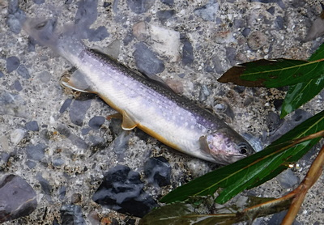

釣行日誌 故郷編
2018/09/09 大増水に泣く
出撃前夜
アマゾンで注文したがまかつのシングルフック 53 が届いたので、老眼を眼鏡型ルーペでカバーしつつ、コツコツと地道にミノーのフック交換を行う。これまではラジオペンチで苦労して行っていたが、今回はスプリットリングオープナーなどという便利な道具も仕入れた。だが、元来不器用なので、外しかけたトレブルフック（３本鉤）が指に刺さって流血の事態に.......
注文した10号では少し小さかったか？ 小さなイワナほど、３本鉤を全部しっかり咥える傾向があるので、これでだいぶダメージが低減されるだろう。
同じく今日届いたスピニングロッドにリールを付けて素振りをしてみる。アングラーズリパブリック（パームス）というメーカーの、エゲリア ESNS-53UL というモデルである。ウルトラライトアクションと謳ってあるが、今使っている年代物のライトアクションの竿よりもビンビンに固い。これで本当に2gのルアーが投げられるのか？ 魚を掛けたときの釣り味は良いのか？ 本当は店頭にて素振りをしてから買いたいのだが、近所の釣具屋3軒では品揃えが貧弱で、通販で選ばざるを得ない。
竿を新調するなんて、2002年にニュージーランドのタウランガで立ち寄った釣り具店で発作的に買った 9ft,#6,4pc のフライロッド以来である。どうしてこのロッドを選んだかというと、アマゾンをぶらついて見ていたときに、偶然目に入った「渓流アキュラシーミノーイング」というDVDを中古で買って見て、飯田重佑氏の見事なキャスティングを目の当たりにし、氏の会社の竿ならあんな釣りが出来るかな.......と想像したという、極めてミーハーな動機だったのだ。釣り具メーカー・出版社など、この業界の思惑にまんまとはまったとも言える。それに、何と言っても僕でも少々無理すれば手の届く価格帯だったことが最大の要因である。
今まで使っていたロッドは、大昔に買った今は無きコータック製の 6ft、ライトアクション、対応ルアー 5g～14g という里川のイワナには少々ゴツイロッドだっただけに、新しいロッドでの本番が楽しみだ。
そんなこんなをしながら週末の今期最終戦に臨む。台風で適当な規模の出水があると嬉しいけど、被害は勘弁して欲しい。釣り人のワガママ。
当日
さて、楽しみにしていた今期最終戦。今日も叔父を置いての単独釣行、レンタカーを飛ばして現地に着いてみれば、何と言うことか！ 先日からの大雨で増水と言うより洪水。他の釣り人もまったく見当たらない。（笑） 水が泥色に濁っていないのが不幸中の幸い。
せっかく遠路はるばる来たことでもあり竿を出さずに引き返す手は無い。先日の一件で怖くなり、急遽アマゾンで購入したクマ避けスプレー（ツキノワグマ専用：専用ホルスター付）をウェストバッグのベルトに装着し、鈴、笛を身に付け、いざ川へ。
増水した流れは激しく、徒渉はもとより川伝いに歩くこともままならないので、竿を出せるポイントを拾ってこまめに車で移動しながら釣る。叔父と同じスタイルだ。
高音・大音量で鳴るクマ避けの笛を吹きつつ、何とかの１つ覚えで最上流の堰堤から入渓。増水で平常時のポイントが消えてしまって攻めづらいが、流れに負けず深場を狙おうと5gの銀赤スプーンを結ぶ。遠投すると、落ち込みの荒い流れの中から可愛いイワナがヒットした。フックだけ摘まんで外し、優しくリリースしてやる。やはりシングルフックはダメージが少ないようだ。

素振りでは硬く感じられたニューロッドも、リールを装着し、ルアーを投げてみると、しっかりと荷重を受け止めて反発し、素晴らしいキャスト性能を見せた。まだ放流サイズしか釣ってないが、釣り味も良い。これはなかなか良いロッドだと嬉しくなる。
4月に大物の出たその堰堤から下流の橋に移動し、草だらけの農道を、笛を吹きつつ行進して日頃釣り人が歩いて出来た杣道のような跡を降りて水辺に立つ。橋の下の幅広の堰堤の左岸側は、いつもは水が流れていないのだが、今日は増水で勢いよく流れ落ち、小淵が出来ている。念のためにスプーンを引くとまた可愛いイワナがヒットした。大増水で出来たつかの間の流れを下流から伝って遡上してきたのだろう。
「イワナの土用のぼり」という古いことわざにあるように、夏以降の増水時には意外な場所で遡上してきた大物が出ることがあるのだが、ここで出たのは見事な放流サイズだった。（笑）
そこから歩み下り、橋の少し下手の長トロ淵で、足元の石裏から良型がヒットした。慎重に寄せてきてネットを構え、さぁて取り込んで写真を、と思った途端にバレた。目測で25cm級であった。
その長トロ淵からさらに下り、幅の広い大きな堰堤に出た。そこを降りることは出来ないので、下流側を偵察して、右岸側200mほど下に期待の持てそうな深みを見つけた。いったん引き返し、藪漕ぎをして左岸の農道に上がり、ぐるりと橋を回ってその深みまで歩いて行く。右岸はなだらかな草地で楽に降りられた。
慎重にアプローチし、ロングキャストで深みの尻からシンキングミノー赤金を引く。大増水でイワナが避難していそうなポイントだったが、沈黙のままである。では対岸は？と観察すると、岸辺の柳の根元に小さなエグレがあった。よし、今度は遠投の効くスプーンだ。ということで結び替え、5gの銀赤をビュンッ！と力を入れてキャストした瞬間、ティップから40cmほどの所でロッドが折れた。
『マジ！？』
愕然としたが、なすすべは無い。おそらく見えないほどの小さな傷があったのかもしれなかった。詳しくは知らないが、張りがある硬調な新しい素材は粘りが少ないのだろうか？ 使い始めて数時間で新品のロッドが折れてしまい、心理的ショックが大きかったがしょうがないので車まで歩いて戻り、気を取り直してスペアの旧いパックロッドをセットする。修理から直って来たら、今度は慎重に使おうと思った。
さて、お得意の「爆釣の淵」まで移動してみると、ここも一面の激流と化しており、攻めようが無い。少しだけ弛みの残っている左岸側、用水の下を狙うが反応は無い。それではと、下流に歩き、葦の茂った左岸側の緩流部を引いてみるがここでもなしのつぶて。例の長いチャラ瀬区間も今日は轟々と勢いよく流れる奔流で溢れてポイントが無い。釣り下ろうにも渡って対岸の道路へ上がることが不可能なので、引き返して車に戻る。
少し下流へ移動して、橋の下流の空き地に停め、橋を回って左岸の民家奥から、まだ攻めていないチャラ瀬区間の下流端を狙う。しかしここも見込みは薄く、期待を持てないままスプーンを引き続ける。やはり流れから魚の反応は無く、さらに移動して集落の外れまで行き、昔１度だけ良い思いをしたことのあるカーブの淵を覗いてみる。ススキの繁みの中を水辺まで藪漕ぎしていくと、突如向こうから黒いカタマリが出てきそうで怖いが、鋭い音の出る笛を吹きまくって恐怖心を克服する。
しかし、左腰（僕は左利きなので）に付けている対ツキノワグマ用クマ避けスプレーは、腰の重みは非常に心強いものがあるが、輸入元の会社が載せた YouTube の動画や取扱説明書を見ると、噴射距離約5m、噴射回数0.5秒×4?5回（連続2?2.5秒）とある。冷静に考えて、もしもクマに遭遇してこちらに向かってきたら、
(1) まずロッドを放り出し、
(2) 腰のホルスターからベルトを開けてスプレーを取り出し、
(3) オレンジ色プラスティックの安全ピンを抜き、
(4) 両手でしっかりと保持しながらレバーを引いて正確にクマの顔面に噴射
しなければならない。海兵隊あたりで猛特訓を受けるとかしないと、そんな行動は取れないのではないだろうか？ おまけに連続噴射時間は３秒も無い！ ま、笛の威力でクマが去ってくれることに期待しておこう。もしこのスプレーが役に立って命拾いしたなら、安い買い物である。
カーブの淵は魅力的な色をしていたが、いかんせん水勢が強過ぎた。下流の葦際も同様。こりゃ、今日はこのへんが潮時かな、とあきらめて再びススキの繁みに分け入って荒れ地から車に戻る。釣り支度を着替えて今日の釣りは終わり。増水に泣かされた釣行であった。
帰る途中、叔父から電話があり、今日叔母さんとドライブの途中に、よく釣りに行く別の渓で、道路上をのそのそ歩いていたクマを見たとのこと。やはりあの辺はたくさん居るのだなぁと改めて思わされた。いやはや.......
イワナの土用のぼり
夏の土用から秋の土用にかけて、イワナは産卵の時期を迎え適地を求めて、サケが川を遡るように渓の奥へと上がって行く。
釣行日誌 故郷編 目次へ
サイトマップ
ホームへ
お問い合わせ